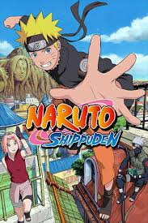
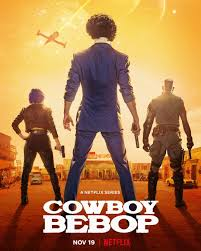

TOP ANIME

Attack on Titan
Genre: Action, Fantasy, Horror
In a world where humanity resides within enormous walled cities to protect themselves from gigantic humanoid Titans, Eren Yeager and his friends join the military to fight back after a Titan breaches their hometown's wall.
read more

Fullmetal Alchemist: Brotherhood
Genre: Adventure, Fantasy, Drama
The story follows two brothers, Edward and Alphonse Elric, who use alchemy in their quest to restore their bodies after a failed attempt to bring their mother back to life.
read more

read more
Naruto/Naruto: Shippuden
Genre: Action, Adventure, Fantasy
Follows the journey of Naruto Uzumaki, a young ninja who seeks recognition and dreams of becoming the Hokage, the village leader. "Shippuden" continues his story as an older and more skilled ninja.
read more

Death Note
Genre: Mystery, Thriller, Supernatural
A high school student named Light Yagami discovers a supernatural notebook that allows him to kill anyone by writing their name in it, leading to a cat-and-mouse game with the brilliant detective L.
read more
One Piece
Genre: Adventure, Fantasy, Action
ONE PIECE is a legendary high-seas quest unlike any other. Luffy is a young adventurer who has longed for a life of freedom ever since he can remember. He sets off from his small village on a perilous.
read more

Cowboy Bebop
Genre: Sci-Fi, Action, Drama
Set in the future, it follows a ragtag group of bounty hunters traveling in their spaceship,
the Bebop, as they chase criminals across the galaxy while dealing with their personal demons
read more